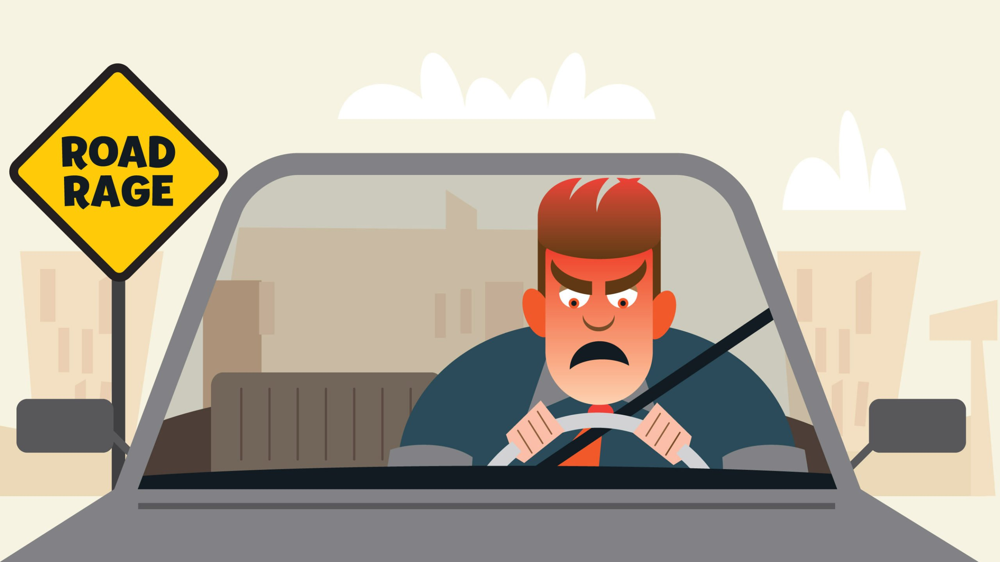

路怒症

时下的大都市，有车一族越来越多，众多车主在享受高品质有车生活的同时，也在承受着某种煎熬。见有人非法并线，就有打人的冲动;前车如果开得慢，就立刻焦躁不安地按喇叭;对于非机动车乱占道，更是忍不住想说粗话……有心理专家指出，这其实是一种汽车时代的世界通病，学名叫“路怒症”，目前已成为继噪声性耳聋、视力疲劳综合征、颈椎病等之后的又一种常见汽车综合症。从“绵羊”变成“恶狼”。
“路怒症”是汽车生活的“副产品”，也是汽车时代一个世界通病。道路拥挤、堵车现象严重、停车难等，是引发“路怒症”最为直接的因素。随着国内汽车日益增多，“路怒症”现象也越来越多。